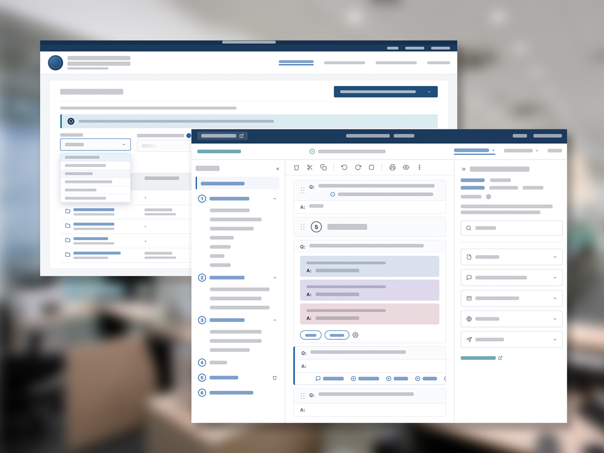
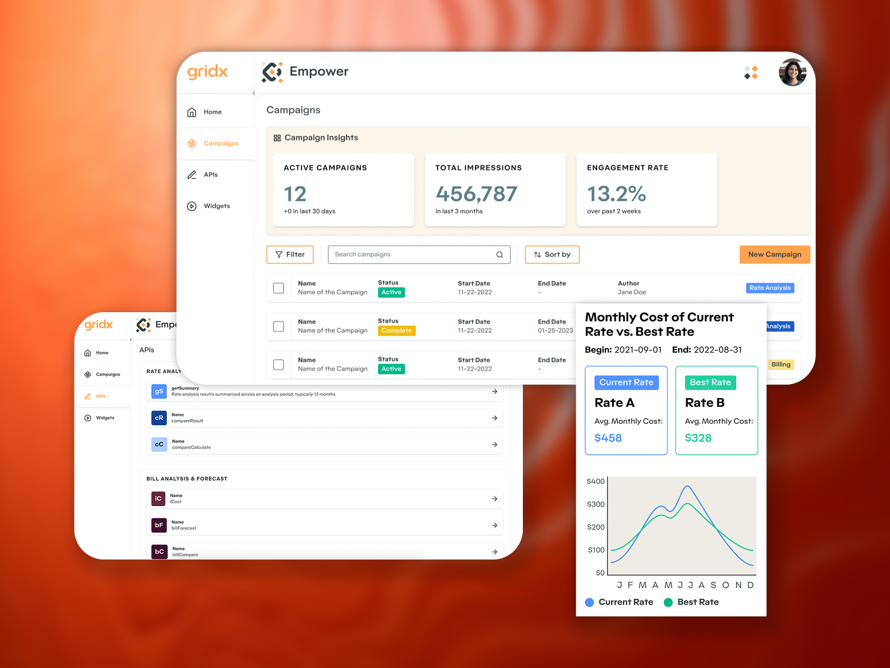
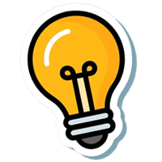
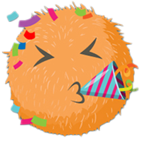
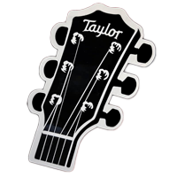
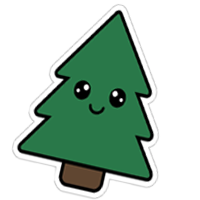

§01 — Selected work05 projects
01
Two years designing tools for a government case management platform — running workshops, large-scale UI updates, research sessions, and much happier users spending much less time completing their tasks.


Took a raw billing API and turned it into a turn-key solution for utilities and their customers. Giving users on both sides of the electric grid access to more accurate information when they need it.


Replaced the 45-min live demo with a self-serve booth experience, bringing more customers into the funnel, and creating a sweet brand mascot and tone in the process.


Total restructuring and redesign for the guitar series pages. Providing a way in for a number of different customer personas.


Modular CMS and storytelling platform that brought to life 50 years of editorial content and legitimized the brand's sustainability efforts.